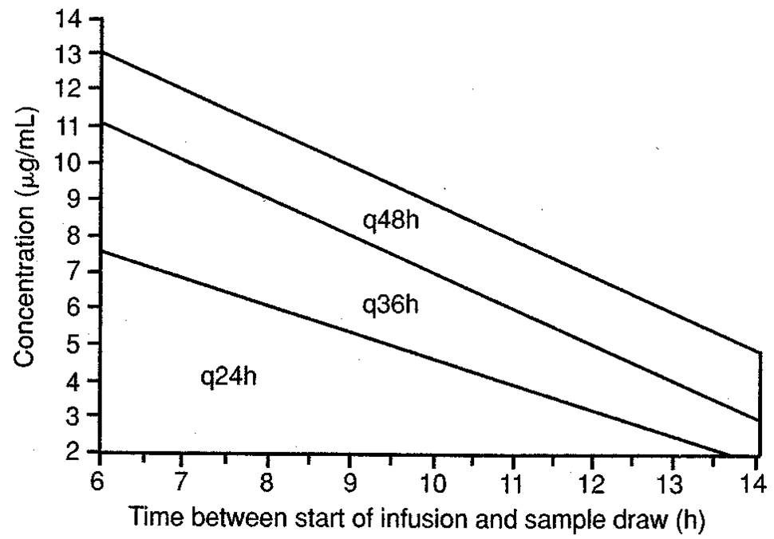

| Drug | Loading Dose | Maintenance Dose |
|---|---|---|
| Gentamicin / Tobramycin | 2-2.5 mg/kg | 1.5-2 mg/kg q8-12hr * |
| Amikacin | 7.5 mg/kg | 5-7.5 mg/kg q12hr * |
| Vancomycin | 25-30 mg/kg | 15-20 mg/kg q8-12hr * (total body weight) |
*Assuming Normal renal function
| Infection Type | Peak (mg/L) | Trough (mg/L) |
|---|---|---|
| Moderate (UTIs) | 4-6 | ≤ 1 |
| Moderate-Severe (Osteomyeltitis, pyelonephritis, soft-tissue infections) | 6-8 | ≤ 1 |
| Severe (bacteremia, pneumonia, life-threatening infections) | 8-10 | ≤ 1 |
| Infection Type | Peak (mg/L) | Trough (mg/L) |
|---|---|---|
| Moderate (UTIs) | 20-25 | 4-8 |
| Moderate-Severe (Osteomyeltitis, pyelonephritis, soft-tissue infections) | 25-30 | 4-8 |
| Severe (bacteremia, pneumonia, life-threatening infections) | 25-30 | 4-8 |
Peak: 30-40 mg/L
Trough: 10-15 mg/L (15-20 in endocarditis, osteomyelitis, meningitis, MRSA, and pneumonia)
AUC0-24 / MIC = 400
NTE 15 mg/min due to risk of Red Man Syndrome
| CrCl | Approximate Dosing Interval (hr) |
|---|---|
| 120 | 12 |
| 100 | 12-18 |
| 80 | 18 |
| 60 | 24 |
| 40 | 36 |
| 30 | 48 |
| 20 | 60 |
| 10 | TDM |
| Dialysis | Random monitoring q3-4d and adjust |
Target Max of 20 mg/L (MIC of 2 mg/L targeting 10:1)
7 mg/kg over 1 hour (gent / tob) or 15 mg/kg (amikacin)
Obtain a value 6-14hr after the start of the infusion on day 5
| CrCl | Interval |
|---|---|
| > 60 | q24h |
| 40-60 | q36h |
| 20-39 | q48h |
| < 20 | Use traditional |

*Nomogram for gent/tob; if using amikacin, divide concentration by 2 then proceed as normal
Author: Corbin Cox
Created: 2018-1-27
Last Updated: 2018-1-27